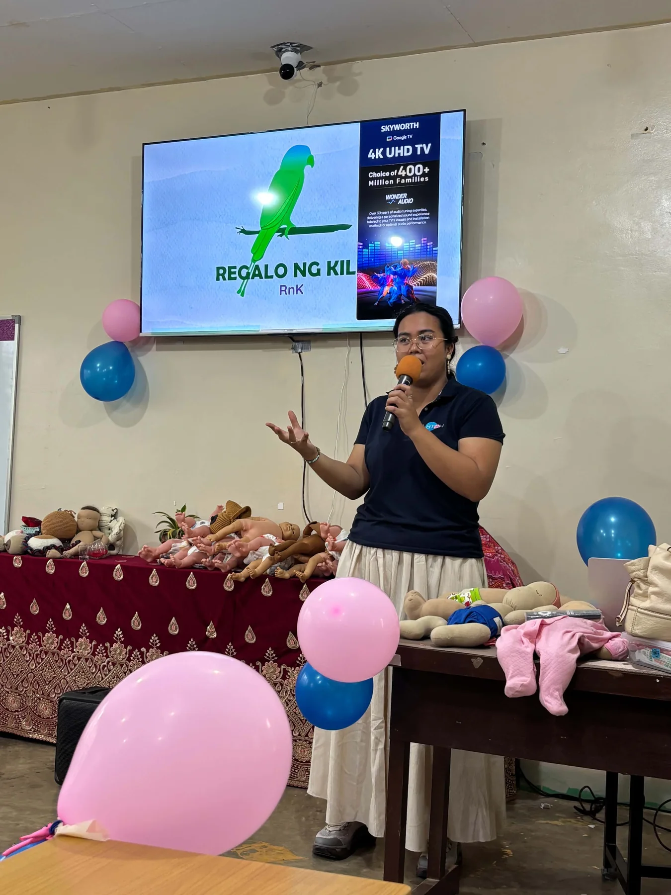
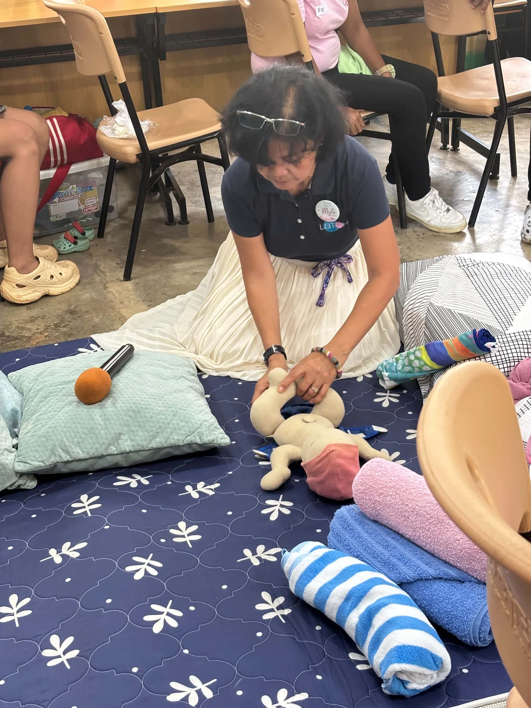
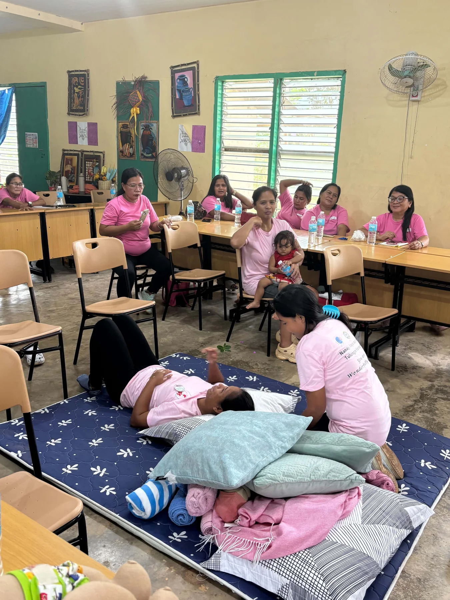

Bintuan · Decalachao · Malbato · Coron Town Proper

Places & Stories
The Calamianes is more than a backdrop.
It is the landscape that connects wildlife, watersheds, farms, schools, families, livelihoods, and the stories that give RnK its meaning.
Where We Work
Rooted in Coron and Busuanga.
RnK works with schools and communities across locations in Coron and Busuanga, within the wider Calamianes landscape.
Salvacion · Cheey · Bugtong
Community Story · May 2, 2023
A basketball court for Calawit Elementary School.
On May 2, 2023, Regalo ng Kilit Foundation turned over a donated basketball court to Calawit Elementary School. The activity reflects RnK’s broader commitment to supporting schools and community spaces alongside its work in biodiversity, education, food systems, and livelihoods.
The photo record captures the school turnover ceremony, members of the visiting group, and the completed court.


Community Story · May 2, 2023
A basketball court for Dipuyai Elementary School.
Also on May 2, 2023, Regalo ng Kilit Foundation turned over a donated basketball court to Dipuyai Elementary School. The activity forms part of RnK’s support for school communities and spaces for learning, play, and community life.
The photo record documents the school gathering and turnover activity with students, school representatives, and members of the visiting group.


Community Learning · August 8, 2026
Supporting breastfeeding education in Busuanga.
On August 8, 2026, RnK funded a breastfeeding class in Busuanga conducted by LATCH, an RnK partner. A LATCH resource speaker led the learning session, combining discussion, demonstrations, and practical activities for participants.
This collaboration extends RnK's community support into practical family and maternal learning while allowing a specialist partner to lead the program.




Biodiversity
A visual field record from the Calamianes.
Field images of wildlife and native flora offer a closer look at the biodiversity connected to the Calamianes landscape.


RnK Scholars
Education creates another way to give back.
Meet RnK scholars through their own words and experiences in education, community life, and environmental stewardship.
Kilit Festival
An annual celebration of biodiversity and community.
The Kilit Festival brings people together around biodiversity awareness, education, culture, creativity, and community participation in the Calamianes. During the Sixth Kilit Festival in Malbato in November 2025, berae was introduced publicly as a shared word for Biodiversity Enhancement, Regenerative Agriculture, and Enterprise. The festival brought together an estimated crowd of about 1,000 attendees, predominantly K–12 students and accompanying adults from the community.
Annual EventBiodiversityEducationCommunity